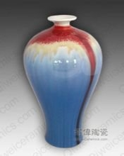
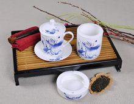
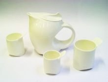

陶瓷
陶瓷是陶器和瓷器的总称。人们早在约8000年前的新石器时代就发明了陶器。常见的陶瓷材料有粘土、氧化铝、高岭土等。陶瓷材料一般硬度较高，但可塑性较差。除了使用于食器、装饰上外，陶瓷在科学、技术的发展中亦扮演着重要角色。陶瓷原料是地球原有的大量资源黏土经过淬取而成。而粘土的性质具韧性，常温遇水可塑，微干可雕，全干可磨;烧至700度可成陶器能装水;烧至1230度则瓷化，可几乎完全不吸水且耐高温耐腐蚀。其用法之弹性，在今日文化科技中有各种创意的应用。发明了陶器。陶瓷材料大多是氧化物、氮化物、硼化物和碳化物等。
陶瓷介绍
陶瓷是以粘土为主要原料以及各种天然矿物经过粉碎混炼、成型和煅烧制得的材料以及各种制品。人们把一种陶土制作成的在专门的窑炉中高温烧制的物品叫陶瓷，陶瓷是陶器和瓷器的总称。陶瓷的传统概念是指所有以粘土等无机非金属矿物为原料的人工工业产品。陶瓷的主要产区为景德镇、高安、丰城、萍乡、佛山、潮州、德化、醴陵、淄博等地。
它包括由粘土或含有粘土的混合物经混炼，成形，煅烧而制成的各种制品。由最粗糙的土器到最精细的精陶和瓷器都属于它的范围。对于它的主要原料是取之于自然界的硅酸盐矿物(如粘土、石英等)，因此与玻璃、水泥、搪瓷、耐火材料等工业，同属于“硅酸盐工业”的范畴。
发展历史
在中国，制陶技艺的产生可追溯到纪元前4500年至前2500年的时代，可以说，中华民族发展史中的一个重要组成部分是陶瓷发展史，中国人在科学技术上的成果以及对美的追求与塑造，在许多方面都是通过陶瓷制作来体现的，并形成各时代非常典型的技术与艺术征。
早在欧洲掌握制瓷技术之前一千多年，中国已能制造出相当精美的瓷器。从我国陶瓷发展史来看，一般是把“陶瓷”这个名词一分为二，为陶和瓷两大类。中国传统陶瓷的发展，经历过一个相当漫长的历史时期，种类繁杂，工艺特殊，所以，对中国传统陶瓷的分类除考虑技术上的硬性指标外，还需要综合考虑历来传统的习惯分类方法，结合古今科技认识上的变化，才能更为有效地得出归类结论。
从传说中的黄帝尧舜及至夏朝（约公元前21世纪——公元前16世纪），是以彩陶来标志其发展的。其中有较为典型的仰韶文化、以及在甘肃发现的稍晚的马家窑与齐家文化等等，解放后在西安半坡史前遗址出土了大量制作精美的彩陶器，令人叹为观止。相传尧传天下于舜，舜传天下于夏禹，禹则传给其子，开始了所谓的 “家天下”。夏传至桀，暴虐无道，商汤将之放遂，自立为帝，所以以征讨得天下者，自汤开始。商得天下后统治达六百余年（约公元前16世纪——公元前11世纪前后），一直到纣王。后被武王征伐，纣王自杀，于是天下归于周。周朝的统治时期大致在公元前11世纪至公元前221年，事实上的有效统治在公元前771 年就已结束。公元前475年——公元前221年称为战国时期，至公元前221年，秦朝崛起，大一统之中国开始，但秦王朝只持续到公前206年，就被汉朝所取代。在这千数百年间，除日用餐饮器皿之外，祭祀礼仪所用之物也大为发展。
从公元前206年至公元220年之间的汉朝，艺术家和工匠们的创作材料不再以玉器和金属为主，陶器受到了更为确切的重视。在这一时期，烧造技艺有所发展，较为坚致的釉陶普遍出现，汉字中开始出现“瓷”字。同时，通过新疆、波斯至叙利亚的通商路线，中国与罗马帝国开始交往，促使东西方文化往来交流，从此一时期的陶瓷器物中也可以看出外来影响的端倪。佛教也至此时传入我国。
六朝时期（公元220年——581年），迅速兴起的佛教艺术对陶瓷也产生了相应的影响，在此季作品造型上留有明显痕迹。公元581年隋朝夺取了权力，结束了长期的南北分裂局面，但它只统治到公元618年就被唐所取代。
唐代（公元618年至公元970年）被分认为是中国艺术史上的一个伟大时期。陶瓷的工艺技术改进巨大，许多精细瓷器品种大量出现，即使用当今的技术鉴测标准来衡量，它们也算得上是真正的优质瓷器。唐末大乱，英雄竟起，接踵而来的是一个朝代争夺局面，即五代，这种局面一直持续到公元960年。连年战乱中却出现了一个陶瓷新品种——柴窑瓷，质地之优被广为传颂，但传世者极为罕见。
陶瓷业至宋代（公元960——1279年）得到了蓬勃发展，并开始对欧洲及南洋诸国大量输出。以钧、汝、官、哥、定为代表的众多有各自特色的名窑在全国各地兴起，产品在色品种日趋丰富。由于东北的（辽）契丹族和（金）女真族的入侵，宋的统治者被迫南迁，再后则被蒙古族所灭。公元1280年，元朝建立，枢府窑出现，景德镇开始成为中国陶瓷产业中心，其名声远扬世界各地。景德镇生产的白瓷与釉下蓝色纹饰形成鲜明对比，青花瓷自此起兴文化在以后的各个历史时期也一直深受人们的喜爱。
明朝统治从1368年开始，直到1644年。这一时期，景德镇的陶瓷制造业在世界上是绝对最好的，在工艺技术和艺术水平上独占突出地位，尤其是青花瓷达到了登峰造极的地步。此外，福建的德化窑、浙江的龙泉窑、河北的磁州窑也都以各自风格迥异的优质陶瓷蜚声于世。随着明朝最后一个皇帝的自杀身亡，公元1644年李自成率领农民起义军攻入北京。从吴三桂召满清大军入关到1911年清室覆灭，满清统治垂二百余年。其中康熙、雍正、乾隆三代被认为是整个清朝统治下陶瓷业最为辉煌的时期，工艺技术较为复杂的产品多有出现，各种颜色釉及釉上彩异常丰富。到清代晚期，政府腐败，国运衰落，人民贫困，中国的陶瓷制造业日趋退化。
民国成立以后，各地相继成立了一些陶瓷研究机构，但产品除沿袭前代以外，就是简单照搬一些外国的设计，毫无发展可言。民国初，军阀袁世凯企图复辟帝制，曾特制了一批“洪宪”年号款识的瓷器，这批瓷器在技术上不可谓不精，以粉彩为主，风格老旧。由于内战频仍，外国入侵，民不聊生，整个陶瓷工业也全面败落，直到新中国建立以前，未出现过让世人注目的产品。
瓷器的发现
陶器的发明是原始社会新石器时代的一个重要标志。
我国已发现距今约10000年新石器时代早期的残陶片。河北徐水县南庄头遗址发现的陶器碎片经鉴定为10800~9700年的遗物。此外，在江西万年县、广西桂林甑皮岩、广东英德县青塘等地也发现了距今1000~7000年的陶器碎片。
因1973年在河北武安磁山首次发现而得名的磁山文化，据放射性
碳素测定，距今7900年以上。1977年考古人员在河南新郑裴李岗发现了与磁山文化时代相当、内容近似的文化遗存，因此合称为“磁山·裴李岗文化”。
磁山·裴李岗文化早于仰韶文化，是黄河中游地区新石器时代文化的代表。该文化的陶器主要有鼎、罐、盘、豆、三足壶、三足钵、双耳壶等，器物以素面无文者居多，部分夹砂陶器饰有花纹。
1973年首次发掘于浙江余姚河姆渡而命名的河姆渡文化距今7000左右，在该文化遗址也出土了大量的陶器。河姆渡文化的陶器为黑陶，造型简单，早期盛行刻画花纹。
在河南渑池县仰韶村的新石器时代遗址，和陕西省西安市郊的半坡遗址都发现了大量做工精美，设计精巧的彩陶。这两个新石器时代遗址都属于母系社会遗址，有6000年以上的历史。
随着社会的不断进步，陶器的质量也逐步提高。到了商代和周代，已经出现了专门从事陶器生产的工种。在战国时期，陶器上已经出现了各种优雅的纹饰和花鸟。这时的陶器也开始应用铅釉，使得陶器的表面更为光滑，也有了一定的色泽。
到了西汉时期，上釉陶器工艺开始广泛流传起来。多种色彩的釉料也在汉代开始出现。有一种盛行于唐代的陶器，以黄、褐、绿为基本釉色，后来人们习惯地把这类陶器称为"唐三彩"。唐三彩是一种低温釉陶器，在色釉中加入不同的金属氧化物，经过焙烧，便形成浅黄、赭黄、浅绿、深绿、天蓝、褐红、茄紫等多种色彩，但多以黄、褐、绿三色为主。唐三彩的出现标志着陶器的种类和色彩已经开始更加丰富多彩。
发展历程
瓷器是中国人发明的，这是举世公认的。瓷器的发明是在陶器技术不断发展和提高的基础上产生的。商代的白陶以是用瓷土（高岭土）作原料，烧成温度达1000℃以上，它是原始瓷器出现的基础。
白陶的烧制成功对由陶器过渡到瓷器起了十分重要的作用。
在商代和西周遗址中发现的"青釉器"已明显具有瓷器的基本特征。它们质地较陶器细腻坚硬，胎色以灰白居多，烧结温度高达1100-1200℃，胎质基本烧结，吸水性较弱，器表面施有一层石灰釉。但是它们与瓷器还不完全相同。被人称为"原始瓷"或"原始青瓷"。
原始瓷从商代出现后，经过西周、春秋战国到东汉，历经了1600-1700年间的变化发展，由不成熟逐步到成熟。
东汉以来至魏晋时制作的瓷器，从出土的文物来看多为青瓷。这些青瓷的加工精细，胎质坚硬，不吸水，表面施有一层青色玻璃质釉。这种高水平的制瓷技术，标志着中国瓷器生产已进入一个新时代。
我国白釉瓷器萌发于南北朝，到了隋朝，已经发展到成熟阶段。至唐代更有新的发展。瓷器烧成温度达到1200℃，瓷的白度也达到了70%以上，接近现代高级细瓷的标准。这一成就为釉下彩和釉上彩瓷器的发展打下基础。
宋代瓷器，在胎质，釉料和制作技术等方面，又有了新的提高，烧瓷技术达到完全成熟的程度。在工艺技术上，有了明确的分工，在我国瓷器发展的一个重要阶段。宋代闻名中外的名窑很多，耀州窑、磁州窑、景德镇窑、龙泉窑、越窑、建窑以及被称为宋代五大名窑的汝、官、哥、钧、定等产品都有它们自己独特的风格。耀州窑（陕西铜川）产品精美，胎骨很薄，釉层匀净；磁州窑（河北彭城）以磁石泥为坯，所以瓷器又称为磁器。磁州窑多生产白瓷黑花的瓷器；景德镇窑的产品质薄色润，光致精美，白度和透光度之高被推为宋瓷的代表作品之一；龙泉窑的产品多为粉青或翠青，釉色美丽光亮；越窑烧制的瓷器胎薄，精巧细致，光泽美观；建窑所生产的黑瓷是宋代名瓷之一，黑釉光亮如漆；汝窑为宋代五大名窑之冠，瓷器釉色以淡青为主色，色清润；官窑是否存在一直是人们争议的问题，一般学者认为，官窑就是卞京官窑，窑设于卞京，为宫廷烧制瓷器；哥窑在何处烧造也一直是人们争议的问题。根据各方面资料的分析，哥窑烧造地点最大的可能是与北宋官窑一起生产；均窑烧造的彩色瓷器较多，以胭脂红最好，葱绿及墨色的瓷器也不错；定窑生产的瓷器胎细，质薄而有光，瓷色滋润，白釉似粉，称粉定或白定。
我国古代陶瓷器釉彩的发展，是从无釉到有釉，又由单色釉到多色釉，然后再由釉下彩到釉上彩，并逐步发展成釉下与釉上合绘的五彩、斗彩。
彩瓷一般分为釉下彩，釉中彩和釉上彩三大类，在胎坯上先画好图案，上釉后入窑烧炼的彩瓷叫釉下彩（温度1250-1340℃）；上釉后入窑烧成的瓷器再彩绘再烧1250--1340℃为釉中彩，上釉后入窑烧成的瓷器再彩绘，又经烤花炉烘烧（600-800℃）而成的彩瓷，叫釉上彩。清代景德镇出产青花瓷器就是釉下彩的一种。
分类
陶与瓷的区别在于原料土的不同和温度的不同。在制陶的温度基础上再添火加温，陶就变成了瓷。陶器的烧制温度在800-1000度，瓷器则是用高岭土在1300-1400度的温度下烧制而成。陶瓷制品的品种繁多，它们之间的化学成分．矿物组成，物理性质，以及制造方法，常常互相接近交错，无明显的界限，而在应用上却有很大的区别。因此很难硬性地归纳为几个系统，详细的分类法各家说法不一，到现在国际上还没有一个统一的分类方法。常用的有如下两种从不同角度出发的分类法。
按用途分类
1、日用陶瓷：如餐具、茶具、缸，坛、盆、罐、盘、碟、碗等。
2、艺术（工艺）陶瓷：如花瓶、雕塑品、园林陶瓷、器皿、 陈设品等。
3、工业陶瓷：指应用于各种工业的陶瓷制品。又分以下6各方面：
①建筑一卫生陶瓷： 如砖瓦，排水管、面砖，外墙砖，卫生洁具等；
②化工（化学）陶瓷： 用于各种化学工业的耐酸容器、管道，塔、泵、阀以及搪砌反应锅的耐酸砖、灰等；
③电瓷： 用于电力工业高低压输电线路上的绝缘子。电机用套管，支柱绝缘子、低压电器和照明用绝缘子，以及电讯用绝缘子，无线电用绝缘子等；
④特种陶瓷： 用于各种现代工业和尖端科学技术的特种陶瓷制品，有高铝氧质瓷、镁石质瓷、钛镁石质瓷、锆英石质瓷、锂质瓷、以及磁性瓷、金属陶瓷等。
按材料致密程度
粗陶(brickware or terra-cotta)， 细陶 (potttery)，炻器 (stone Ware)，半瓷器 (semivitreous china)，以至瓷器(porelain)，原料是从粗到精，坯体是从粗松多孔，逐步到达致密，烧结，烧成温度也是逐渐从低趋高。
粗陶是最原始最低级的陶瓷器，一般以一种易熔粘土制造。在某些情况下也可以在粘土中加入熟料或砂与之混合，以减少收缩。这些制品的烧成温度变动很大，要依据粘土的化学组成所含杂质的性质与多少而定。以之制造砖瓦，如气孔率过高，则坯体的抗冻性能不好，过低叉不易挂住砂浆，所以吸水率一般要保持5～15%之间。烧成后坯体的颜色，决定于粘土中着色氧化物的含量和烧成气氛，在氧化焰中烧成多呈黄色或红色，在还原焰中烧成则多呈青色或黑色。
我国建筑材料中的青砖，即是用含有Fe₂O3的黄色或红色粘土为原料，在临近止火时用还原焰煅烧，使Fe203还原为FeO成青色，陶器可分为普通陶器和精陶器两类。普通陶器即指土陶盆．罐、缸、瓮．以及耐火砖等具有多孔性着色坯体的制品。精陶器坯体吸水率仍有4～12%，因此有渗透性，没有半透明性，一般白色，也有有色的。釉多采用含铅和硼的易熔釉。它与炻器比较，因熔剂宙量较少，烧成温度不超过1300℃，所以坯体增未充分烧结；与瓷器比较，对原料的要求较低，坯料的可塑性较大，烧成温度较低。不易变形，因而可以简化制品的成形，装钵和其他工序。但精陶的机械强度和冲击强度比瓷器．炻器要小，同时它的釉比上述制品的釉要软，当它的釉层损坏时，多孔的坯体即容易沾污，而影响卫生。
精陶按坯体组成的不同，又可分为：粘土质、石灰质，长石质、熟料质等四种。粘土质精陶接近普通陶器。石灰质精陶以石灰石为熔剂，其制造过程与长石质精陶相似，而质量不及长石质精陶，因之近年来已很少生产，而为长石质精陶所取代。长石质精陶又称硬质精陶，以长石为熔剂。是陶器中最完美和使用最广的一种。近世很多国家用以大量生产日用餐具(杯、碟盘予等)及卫生陶器以代替价昂的瓷器。热料精陶是在精陶坯料中加入一定量熟料，目的是减少收缩，避免废品。这种坯料多应用于大型和厚胎制品(如浴盆，太的盥洗盆等)。
炻器在我国古籍上称“石胎瓷”，坯体致密，已完全烧结，这一点已很接近瓷器。但它还没有玻化，仍有2%以下的吸水率，坯体不透明，有白色的，而多数允许在烧后呈现颜色，所以对原料纯度的要求不及瓷器那样高，原料取给容易。炻器具有很高的强度和良好的热稳定性，很适应于现代机械化洗涤，并能顺利地通过从冰箱到烤炉的温度急变，在国际市场上由于旅游业的发达和饮食的社会化，炻器比之搪陶具有更大的销售量。
半瓷器的坯料接近于瓷器坯料，但烧后仍有3～5%的吸水率(真瓷器，吸水率在0.5%以下)，所以它的使用性能不及瓷器，比精陶则要好些。
瓷器是陶瓷器发展的更高阶段。它的特征是坯体已完全烧结，完全玻化，因此很致密，对液体和气体都无渗透性，胎薄处星半透明，断面呈贝壳状，以舌头去舔，感到光滑而不被粘住．硬质瓷具有陶瓷器中最好的性能。用以制造高级日用器皿，电瓷、化学瓷等。
软质瓷 (soft porcelain) 的熔剂较多，烧成温度较低，因此机械强度不及硬质瓷，热稳定性也较低，但其透明度高，富于装饰性，所以多用于制造艺术陈设瓷。至于熔块瓷 (Fritted porcelain) 与骨灰磁 (bone china)，它们的烧成温度与软质瓷相近，其优缺点也与软质瓷相似，应同属软质瓷的范围。这两类瓷器由于生产中的难度较大(坯体的可塑性和干燥强度都很差，烧成时变形严重)，成本较高，生产并不普遍。英国是骨灰瓷的著名产地，我国唐山也有骨灰瓷生产。
特种陶瓷是随着现代电器，无线电、航空、原子能、冶金、机械、化学等工业以及电子计算机、空间技术、新能源开发等尖端科学技术的飞跃发展而发展起来的。这些陶瓷所用的主要原料不再是粘土，长石，石英，有的坯休也使用一些粘土或长石，然而更多的是采用纯粹的氧化物和具有特殊性能的原料，制造工艺与性能要求也各不相同。
产品特性
耐摔--全国首家具备这个技术，从高空跌落完好无损，非常耐摔！
抗撞击——其结构，使面板具有极强的抗击性，并经日常实际使用证实。
耐刻刮——特殊的表面结构，使陶瓷棒具有耐刻刮性，即使受各种硬物作用也能长期保持外形不受损伤。
耐磨——陶瓷棒有很强的耐磨性，适用于有重物放置处或需频繁清洗处。
易清洗——紧密的无渗透表面，使灰尘不易粘附于其上，因此该产品可以用相关的溶剂很方便地清洗，而不会对颜色产生任何影响。
防潮性——陶瓷板的吸水性可以和玻璃相媲美，因此不会受天气变化和潮气的影响，也不会腐坏或产生霉菌。
抗紫外线——陶瓷棒不受天气变化的影响，不管是日晒雨淋，还是气温急剧变化，陶瓷板的核心和外观都不会改变。
防火性——陶瓷棒表面对燃烧的香烟有极强的防护能力。该材料阻燃，面板不会融化，能长期保持特性。
防静电——陶瓷棒被证明为防静电材料，这使得该面板非常适用于无尘区域，光学工业和计算机工业。
耐化学腐蚀——陶瓷板有很强的耐化学腐蚀的特性，防酸、防氧化甲苯及类似物质。
{kind=link}
{kind=link}
{kind=link}
{kind=link}
{kind=link}
{kind=link}